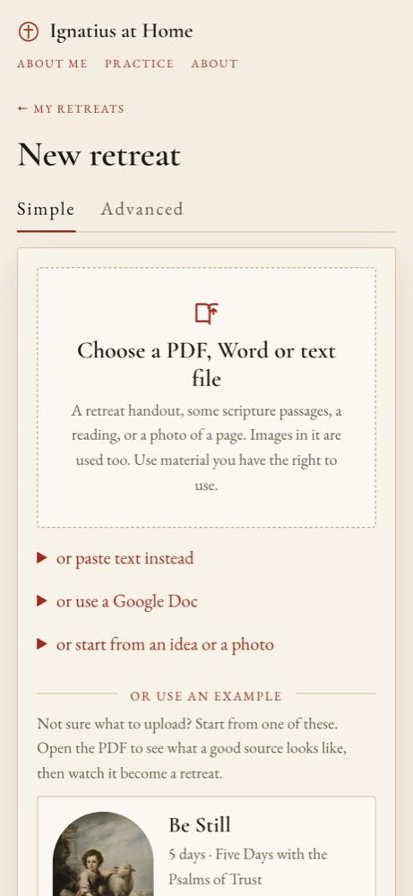

A PDF, Word file, photo of a page, pasted text or shared Google Doc becomes a day-by-day plan.

POST /api/retreats (the file or google_doc link, model, planning prompt, build options, series) answers 202 at once; the work goes on in the background.app/extract.py pulls out the text, pictures and scanned pages (PyMuPDF for PDFs, python-docx for Word; photos as images). app/google_docs.py downloads a shared Doc.app/pipeline.py saves the retreat and its source, then llm.plan_retreat asks the model for a plan in a strict JSON schema: title, days, each day's passage word for word, grace, focus and painting.GET /api/retreats/{id} for progress.data jsonb, the whole retreat (plan, days, status, costs){user}/{retreat}/source.json, scan{i}.png, image{i}.jpg{user}/user info.md: About me, added to every call when the retreat is personalanthropic/claude-opus-5.5, the default. Menu: Fable 5.1, Opus 5, Sonnet 5, Haiku 4.5. Through OpenRouter, every call logged with its cost. Reads the pictures and scanned pages too.
muse-glimmer (default, reads images) or llama-4-scout, on the NSF Jetstream2 academic cloud.
Up to 600,000 characters of earlier weeks for Claude (80,000 for the free models), oldest shortened first.